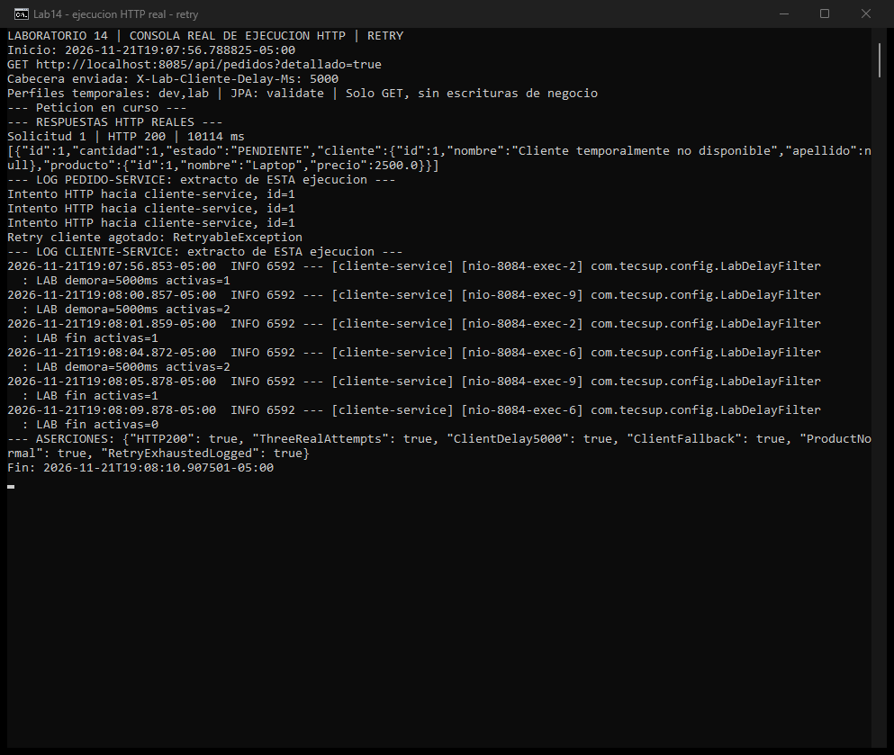
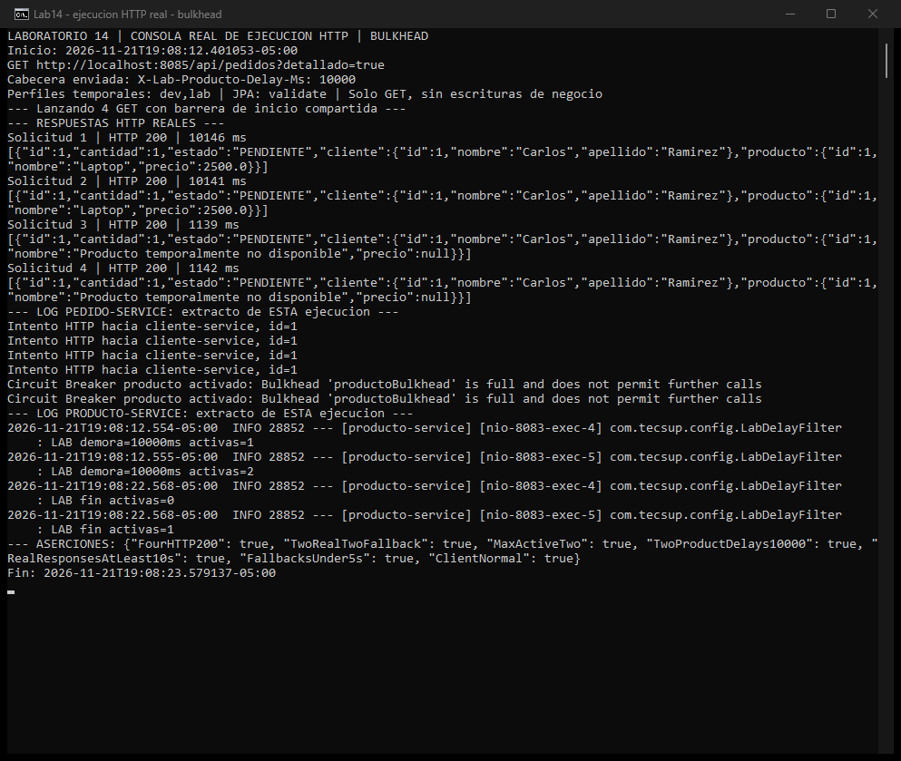

Informe de resultados registrados, con fuentes JSON y enlaces a capturas originales. Esta página no es una interfaz de Postman ni una captura en vivo de los servicios. La sesión posterior con capturas directas y el recorrido inicial se presentan por separado, conservando sus cifras originales.
Sesión del 21/11/2026, entre las 19:07 y 19:09 (-05:00), contra servicios Java y MySQL reales. Endpoint: GET http://localhost:8085/api/pedidos?detallado=true. Son capturas nativas de la consola que ejecutó los GET y presentó resultados y logs, no de Postman ni de este informe.
Cabecera X-Lab-Cliente-Delay-Ms: 5000. Tres intentos, demora de 5000 ms registrada en Cliente, fallback de Cliente y Producto normal. HTTP 200 en 10114 ms; seis comprobaciones aprobadas.
Fuentes: resultados y logs de Retry; metadatos y SHA-256 de la captura.

Cabecera X-Lab-Producto-Delay-Ms: 10000. Cuatro GET concurrentes: dos productos reales en 10146/10141 ms y dos fallbacks en 1139/1142 ms. Cuatro HTTP 200, máximo de dos llamadas activas, dos rechazos productoBulkhead is full; siete comprobaciones aprobadas.
Fuentes: resultados y logs de Bulkhead; metadatos y SHA-256 de la captura.

Trece comprobaciones aprobaron entre ambos escenarios. Son independientes de las doce aserciones Postman del recorrido anterior.
El cierre satisfactorio registrado dejó los servicios de negocio en DEV, sin LAB y con ddl-auto=validate; los listados consultados permanecieron iguales. Las cabeceras artificiales ya no causaron demora (23/37/25 ms en Categoría/Producto/Cliente); Pedido sin cabeceras devolvió datos reales en 54 ms. El intento previo interrumpido se conserva como trazabilidad: no acredita éxito ni es el cierre vigente.
GET /api/pedidos conserva el listado original; detallado=true activa la composición resiliente. LAB es exclusivo de simulaciones temporales. No hubo despliegue PROD; la causa histórica del HTTP 500 sigue sin confirmar. El estado de cierre es histórico, no una consulta en vivo al abrir este informe. Véanse los resultados y pendientes académicos.
Fuente: retry/categoria-no-disponible.json
Intentos observados: 3. Duracion: 4340 ms.
{
"categoria": {
"estado": "NO DISPONIBLE",
"id": 1,
"nombre": "Categoría temporal no disponible"
},
"categoriaId": 1,
"id": 1,
"nombre": "Laptop",
"precio": 2500.0,
"stock": 10
}2026-11-21T18:09:31.858-05:00 INFO 24604 --- [producto-service] [ main] o.s.cloud.commons.util.InetUtils : Cannot determine local hostname Hibernate: select p1_0.id,p1_0.categoria_id,p1_0.nombre,p1_0.precio,p1_0.stock from producto p1_0 where p1_0.id=? Llamando a categoria-service... 2026-11-21T18:09:31.955-05:00 INFO 24604 --- [producto-service] [ main] com.tecsup.ProductoServiceApplication : Started ProductoServiceApplication in 14.218 seconds (process running for 14.907) Llamando a categoria-service... Llamando a categoria-service... Circuit Breaker fallback activado: Connection refused executing GET http://categoria-service/api/categorias/1
Fuente: bulkhead/categoria-concurrente.json
| Solicitud | HTTP | ms | Respuesta real |
|---|---|---|---|
| 0 | 200 | 10023 | {"categoria":{"estado":"ACTIVO","id":1,"nombre":"Laptops"},"categoriaId":1,"id":1,"nombre":"Laptop","precio":2500.0,"stock":10} |
| 1 | 200 | 1010 | {"categoria":{"estado":"NO DISPONIBLE","id":1,"nombre":"Categoría temporal no disponible"},"categoriaId":1,"id":1,"nombre":"Laptop","precio":2500.0,"stock":10} |
| 2 | 200 | 1010 | {"categoria":{"estado":"NO DISPONIBLE","id":1,"nombre":"Categoría temporal no disponible"},"categoriaId":1,"id":1,"nombre":"Laptop","precio":2500.0,"stock":10} |
| 3 | 200 | 10020 | {"categoria":{"estado":"ACTIVO","id":1,"nombre":"Laptops"},"categoriaId":1,"id":1,"nombre":"Laptop","precio":2500.0,"stock":10} |
2026-11-21T18:10:04.011-05:00 INFO 11584 --- [categoria-service] [nio-8082-exec-4] com.tecsup.config.LabDelayFilter : LAB demora=10000ms activas=2 2026-11-21T18:10:04.011-05:00 INFO 11584 --- [categoria-service] [nio-8082-exec-2] com.tecsup.config.LabDelayFilter : LAB demora=10000ms activas=1 Hibernate: select c1_0.id,c1_0.estado,c1_0.nombre from categoria c1_0 where c1_0.id=? Hibernate: select c1_0.id,c1_0.estado,c1_0.nombre from categoria c1_0 where c1_0.id=? 2026-11-21T18:10:14.019-05:00 INFO 11584 --- [categoria-service] [nio-8082-exec-2] com.tecsup.config.LabDelayFilter : LAB fin activas=1 2026-11-21T18:10:14.019-05:00 INFO 11584 --- [categoria-service] [nio-8082-exec-4] com.tecsup.config.LabDelayFilter : LAB fin activas=0
Fuente: actividad-final/cliente-retry.json
Intentos observados: 3. Duracion: 10079 ms.
{
"value": [
{
"id": 1,
"cantidad": 1,
"estado": "PENDIENTE",
"cliente": {
"id": 1,
"nombre": "Cliente temporalmente no disponible",
"apellido": null
},
"producto": {
"id": 1,
"nombre": "Laptop",
"precio": 2500.0
}
}
],
"Count": 1
}Hibernate: select p1_0.id_pedido,p1_0.estado,p1_0.fecha,p1_0.id_cliente,p1_0.total from pedido p1_0 Hibernate: select d1_0.id_pedido,d1_0.id_detalle,d1_0.cantidad,d1_0.id_producto,d1_0.precio from detalle_pedido d1_0 where d1_0.id_pedido=? Intento HTTP hacia cliente-service, id=1 Intento HTTP hacia cliente-service, id=1 Intento HTTP hacia cliente-service, id=1 Retry cliente agotado: RetryableException Consultando producto-service...
Fuente: actividad-final/producto-bulkhead.json
| Solicitud | HTTP | ms | Respuesta real |
|---|---|---|---|
| 0 | 200 | 10046 | [{"id":1,"cantidad":1,"estado":"PENDIENTE","cliente":{"id":1,"nombre":"Carlos","apellido":"Ramirez"},"producto":{"id":1,"nombre":"Laptop","precio":2500.0}}] |
| 1 | 200 | 1033 | [{"id":1,"cantidad":1,"estado":"PENDIENTE","cliente":{"id":1,"nombre":"Carlos","apellido":"Ramirez"},"producto":{"id":1,"nombre":"Producto temporalmente no disponible","precio":null}}] |
| 2 | 200 | 10046 | [{"id":1,"cantidad":1,"estado":"PENDIENTE","cliente":{"id":1,"nombre":"Carlos","apellido":"Ramirez"},"producto":{"id":1,"nombre":"Laptop","precio":2500.0}}] |
| 3 | 200 | 1033 | [{"id":1,"cantidad":1,"estado":"PENDIENTE","cliente":{"id":1,"nombre":"Carlos","apellido":"Ramirez"},"producto":{"id":1,"nombre":"Producto temporalmente no disponible","precio":null}}] |
2026-11-21T18:10:24.193-05:00 INFO 4568 --- [producto-service] [nio-8083-exec-6] com.tecsup.config.LabDelayFilter : LAB demora=10000ms activas=1 2026-11-21T18:10:24.194-05:00 INFO 4568 --- [producto-service] [nio-8083-exec-2] com.tecsup.config.LabDelayFilter : LAB demora=10000ms activas=2 Hibernate: select p1_0.id,p1_0.categoria_id,p1_0.nombre,p1_0.precio,p1_0.stock from producto p1_0 where p1_0.id=? Hibernate: select p1_0.id,p1_0.categoria_id,p1_0.nombre,p1_0.precio,p1_0.stock from producto p1_0 where p1_0.id=? Llamando a categoria-service... Llamando a categoria-service... 2026-11-21T18:10:34.219-05:00 INFO 4568 --- [producto-service] [nio-8083-exec-6] com.tecsup.config.LabDelayFilter : LAB fin activas=1 2026-11-21T18:10:34.220-05:00 INFO 4568 --- [producto-service] [nio-8083-exec-2] com.tecsup.config.LabDelayFilter : LAB fin activas=0